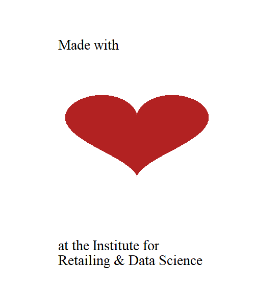

Data-based Storytelling
Lectures
| Date | Time | Room | Topics | Slides | Readings |
|---|---|---|---|---|---|
| 01-09-2023 | 1:00pm - 6:00pm | LC.2.064 | Introduction | Introduction | Lost in Data Translation, R for Data Science |
| 01-11-2023 | 1:00pm - 6:00pm | LC.1.038 | Modelling | Data Science and the Art of Persuasion | |
| 01-16-2023 | 1:00pm - 6:00pm | LC.2.064 | Visualization/Datascience in R | The Psychology behind Data Visualization Techniques | |
| 01-18-2023 | 1:00pm - 6:00pm | LC.2.064 | Review | Causal Pitchfork Visualization | A Crash Course in Good and Bad Controls |
| 01-20-2023 | 1:00pm - 3:30pm | LC.2.064 | Presentations / Exam |
Links
- Syllabus
- Getting started with R
- Causal Pitchfork Visualization
- Institute for Retailing & Data Science (RDS)
- List of Datasets